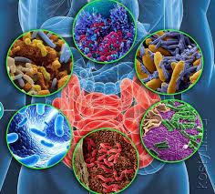

Ламята която яде времето ни!
В други времена рицари в лъскави доспехи са размахвали мечове срещу чудовища за да опазят златната ябълка и да се спасят. Рицарите на 21-ви век, облечени с дънки, също са предизвикани да се борят с ламята промъкваща се по кабела за интернет, опитвайки се да погълне невидимо и безжично цялото им време. Враг или приятел е ламята, зависи от отношението и дали ще ни обсеби.
Аз съм мозък, аз съм умен! Според д-р Рафаел Келман микрофлората в червата има сложни взаимоотношения с мозъка. Тя влияе не само на настроението ни, но също така и върху работата и решението ни да научим HTML и CSS. Едни дребни микроби в нас ни казват „Запиши се на курс, пиши си домашните, иди на изпит…“. Командват ни както си искат, и всичко това за да изкарваме повече пари и да ги храним. А те искат традиционни ферментирали продукти: кисело мляко, кисели краставички, кисело зеле, домашно вино и др.
